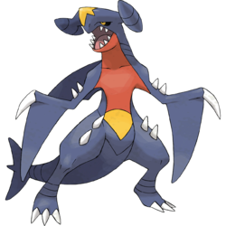

Garchomp

#445
Garchomp faz sua casa em montanhas vulcânicas. Ele voa pelo céu tão rápido quanto um avião a jato, caçando o máximo de presas que pode.
Dragon
Ground
| Nome | Valor |
|---|---|
| Vida | 108 |
| Ataque | 130 |
| Defesa | 95 |
| Sp. Ataque | 80 |
| Sp. Defesa | 85 |
| Velocidade | 102 |